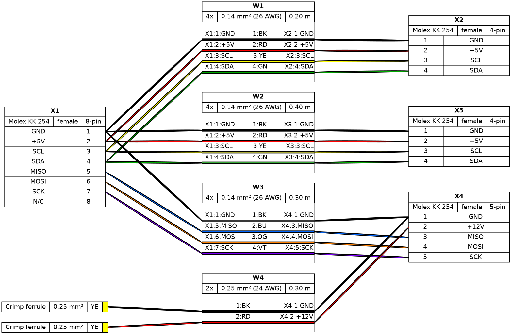

filare (formerly WireViz)¶


Summary¶
Filare (the new name for WireViz) is a tool for documenting cables, wiring harnesses and connector pinouts. It takes plain text, YAML-formatted files as input and produces graphical output (SVG, PNG, ...) via GraphViz. It handles automatic BOM (Bill of Materials) creation and a number of extras.
Why Filare over WireViz?¶
- The file structure has been revamped for better separation of concern
- Tests have been added to increase dramatically the coverage of the library
- Jinja2 templates are now used for key visual elements
- Pydantic is used instead of dataclasses to bring the data structure into the 2020s
- Support for engineering document export is much better, allowing sharing with suppliers and clients directly
- The representation is backward-compatible when possible, so the user should be able to switch seemlessly
Features¶
- Filare input files are fully text based
- No special editor required
- Human readable
- Easy version control
- YAML syntax
- UTF-8 input and output files for special character support
-
Understands and uses color abbreviations as per IEC 60757 (black=BK, red=RD, ...)
-
Auto-generates standard wire color schemes and allows custom ones if needed
- DIN 47100 (WT/BN/GN/YE/GY/PK/BU/RD/BK/VT/...)
- IEC 60757 (BN/RD/OR/YE/GN/BU/VT/GY/WT/BK/...)
- 25 Pair Color Code (BUWH/WHBU/OGWH/WHOG/GNWH/WHGN/BNWH/...)
- TIA/EIA 568 A/B (Subset of 25-Pair, used in CAT-5/6/...)
- Understands wire gauge in mm² or AWG
- Optionally auto-calculates equivalent gauge between mm² and AWG
- Is suitable for both very simple cables, and more complex harnesses.
- Allows for easy-autorouting for 1-to-1 wiring
- Generates BOM (Bill of Materials)
Note: Filare is not designed to represent the complete wiring of a system. Its main aim is to document the construction of individual wires and harnesses.
Examples¶
Demo 01¶
connectors:
X1:
type: D-Sub
subtype: female
pinlabels: [DCD, RX, TX, DTR, GND, DSR, RTS, CTS, RI]
X2:
type: Molex KK 254
subtype: female
pinlabels: [GND, RX, TX]
cables:
W1:
gauge: 0.25 mm2
length: 0.2
color_code: DIN
wirecount: 3
shield: true
connections:
- - X1: [5, 2, 3]
- W1: [1, 2, 3]
- X2: [1, 3, 2]
- - X1: 5
- W1: s
Output file:

Bill of Materials (auto-generated)
Demo 02¶

Syntax, tutorial and example gallery¶
Read the syntax description to learn about Filare's features and how to use them.
See the tutorial page for sample code, as well as the example gallery to see more of what Filare can do.
Installation¶
Requirements¶
Filare requires Python 3.9 or later.
Filare requires GraphViz to be installed in order to work. See the GraphViz download page for OS-specific instructions.
Note: Ubuntu 18.04 LTS users in particular may need to separately install Python 3.7 or above, as that comes with Python 3.6 as the included system Python install. The option to generate pdf is not supported for python 3.7, so it might not be possible to use with this version of Ubuntu. If you are forced to use Ubuntu 18.04 for some reason, fill up an issue/MR and I can provide a Docker image to perform the generation.
Quick install (uv, recommended)¶
Filare uses the uv workflow for dependency management and command execution.
uv venv
uv sync
uv run filare --help
Container (Ubuntu 24.04, uv, graphviz, prettier)¶
A Docker image is provided to avoid local dependency setup:
docker build -t filare:latest .
Run common tasks (mount your working tree so outputs land on the host):
- Build all examples/tutorials/demos:
docker run --rm -v "$PWD":/app filare uv run --no-sync python src/filare/tools/build_examples.py - Build examples only:
docker run --rm -v "$PWD":/app filare uv run --no-sync filare examples/ex*.yml -d examples/metadata.yml -f hs -o outputs/examples - Build tutorials only:
docker run --rm -v "$PWD":/app filare uv run --no-sync filare tutorial/tutorial*.yml -d tutorial/metadata.yml -f hs -o outputs/tutorial - Lint (black + prettier):
docker run --rm -v "$PWD":/app filare ./scripts/lint.sh - Build and serve docs (port 9000):
docker run --rm -p 9000:9000 -v "$PWD":/app filare bash -lc 'cd /app && uv run --no-sync mkdocs build && cd site && uv run --no-sync python -m http.server 9000' - Regenerate document YAMLs (document representations) and control overwrites:
- By default generated
*.document.yamlfiles can be overwritten on rebuild. To freeze a document, setallow_override: falsefor that entry inoutputs/*/document_hashes.yaml; reruns will then warn and keep your manual edits. - To force a refresh, delete the corresponding
*.document.yamland its entry indocument_hashes.yamlbefore rebuilding.
Building docs locally (without Docker)¶
From the project root:
uv run --no-sync mkdocs build
uv run --no-sync python -m http.server 9000 --directory site
Then open http://localhost:9000.
- Run tests:
(default run executes unit tests; to include slow documentation/functional tests use
uv run --no-sync pytestuv run --no-sync pytest -m "unit or functional" --include-functionalor justuv run --no-sync pytest -m functional --include-functional.) ```
Documentation (MkDocs + optional Sphinx)¶
- Build MkDocs site locally:
uv run --no-sync mkdocs build - Serve for preview:
uv run --no-sync mkdocs serve -a 0.0.0.0:8000 - (Optional) Generate API docs with Sphinx: see
docs/mkdocs.mdfor suggested setup.
Debian Dependencies¶
sudo apt install graphviz
Fedora Dependencies¶
sudo dnf install graphviz
Pango (only for weasyprint pdf generation)¶
See https://pango.gnome.org/
Installing the latest release¶
Install from PyPI using uv:
uv venv
uv pip install filare
uv run filare --version
Installing the development version¶
Access to the current state of the development branch by cloning the repo and syncing dependencies with uv:
# Cloning the repository
git clone https://github.com/laurierloi/filare
cd filare
# Setup env and install dependencies
uv venv
uv sync
Avoid mixing pip and uv inside the same environment to prevent dependency drift. If you prefer a one-off install without a venv, use the container workflow above instead of system-wide pip.
If you would like to contribute to this project, make sure you read the contribution guidelines!
Setting up pre-commit hooks (uv)¶
Install the dev dependencies and register the hooks with uv (keeps cache local to the repo):
uv venv
uv sync --group dev
uv run pre-commit install
You can check the hooks locally with uv run pre-commit run --all-files.
Usage¶
How to run¶
The Filare CLI (legacy filare alias still available) creates harness documents.
To do so, a shared metadata file (or multiple) must be provided to the filare command.
Then, a list of harnesses to include within the document should also be provided.
In the simplest case, 1 harness can be provided.
$ uv run filare -d ~/path/to/file/metadata.yml ~/path/to/file/myharness1.yml ~/path/to/file/myharness2.yml
Depending on the options specified, this will output some or all of the following files:
titlepage.html Titlepage document. It has links to the different harness for easy navigation
shared_bom.tsv A BOM (bill of materials) for all items within the harness document
myharness{1,2}.gv GraphViz output
myharness{1,2}.svg Wiring diagram as vector image
myharness{1,2}.png Wiring diagram as raster image
myharness{1,2}.bom.tsv BOM (bill of materials) as tab-separated text file
myharness{1,2}.html HTML page with wiring diagram and BOM embedded
Wildcards in the file path are also supported to process multiple files at once, e.g.:
$ uv run filare ~/path/to/files/*.yml
To see how to specify the output formats, as well as additional options, run:
$ uv run filare --help
Sample run all examples¶
$ uv run filare -d examples/metadata.yml examples/ex*.yml
Then open examples/titlepage.html to open the document root
Quantity multipliers (filare-qty)¶
Use filare-qty to capture per-harness quantity multipliers before generating a shared BOM with filare.
# Prompt for multipliers (or reuse an existing quantity_multipliers.txt)
$ uv run filare-qty tests/bom/bomqty.yml
# Apply the multipliers when building the shared BOM
$ uv run filare tests/bom/bomqty.yml --use-qty-multipliers
By default the multipliers are stored as JSON in quantity_multipliers.txt next to the harness file; override the path with --multiplier-file-name and re-prompt with --force-new.
(Re-)Building the example projects¶
Please see the documentation of the build_examples.py script for info on building the demos, examples and tutorial.
Changelog¶
See the Changelog
Status¶
This is very much a work in progress. Source code, API, syntax and functionality may change wildly at any time.